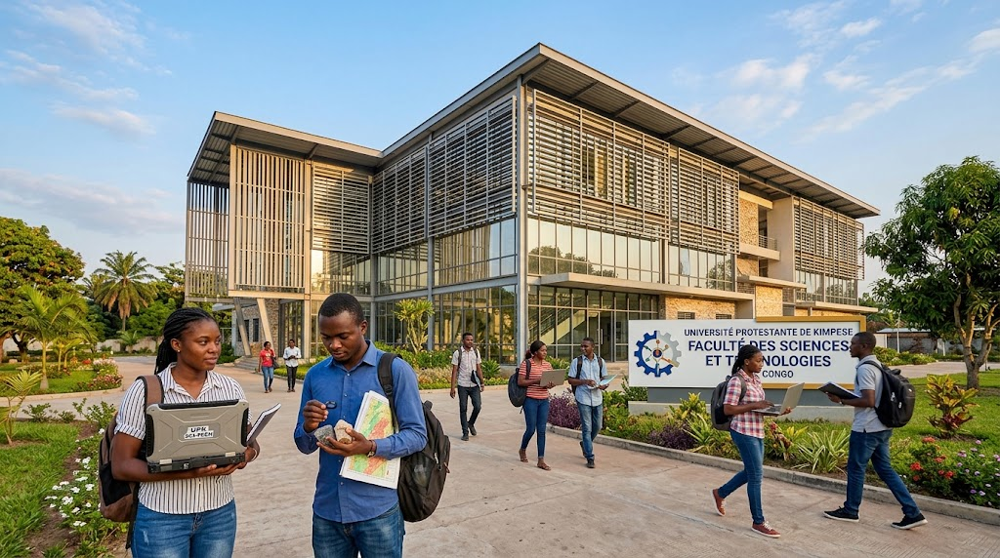

Sciences et
Technologies
Former des spécialistes capables d'explorer, d'analyser et de valoriser durablement les ressources naturelles grâce aux sciences et aux technologies modernes.
Comprendre et innover pour un avenir durable
La formation associe les sciences fondamentales, l'observation de terrain et l'utilisation des technologies modernes pour répondre aux défis liés aux ressources naturelles et au développement.
Les étudiants développent des compétences en géologie, mines, environnement, cartographie, télédétection et analyse des données.

Informations clés
Un parcours orienté vers la science, la pratique et l'innovation.
Niveaux
Licence et parcours spécialisés selon les filières ouvertes.
Domaines
Sciences de la Terre, environnement, mines et technologies.
Méthodes
Cours, travaux pratiques, terrain, cartographie et projets.
Débouchés
Bureaux d'études, mines, environnement, recherche et innovation.
Prêt à rejoindre la formation ?
Consultez les conditions d'admission et commencez votre inscription à l'UPK.
Voir les admissions